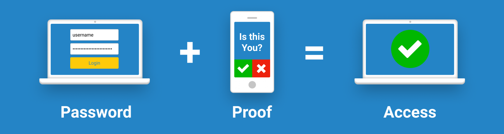
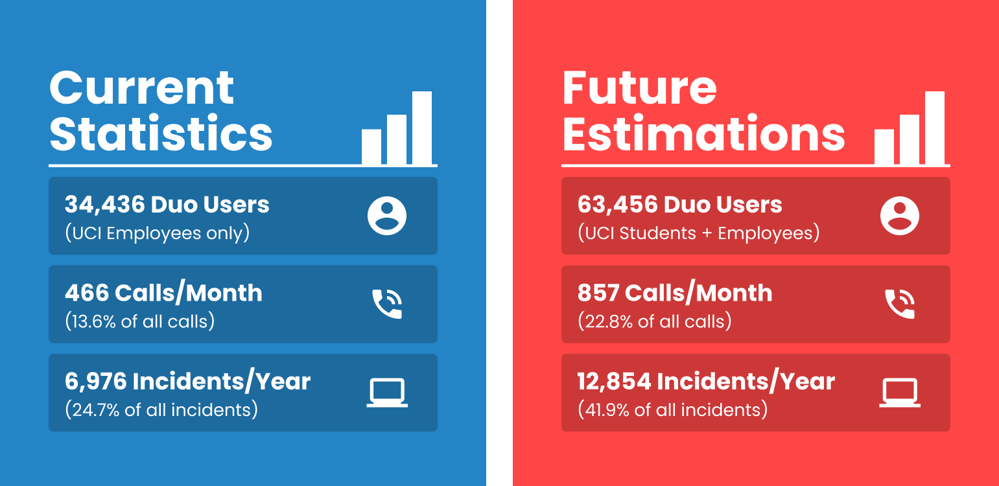
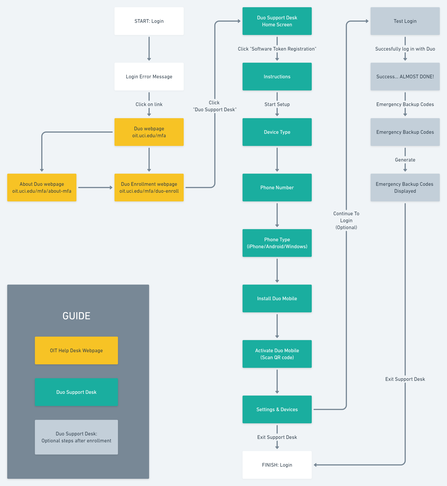
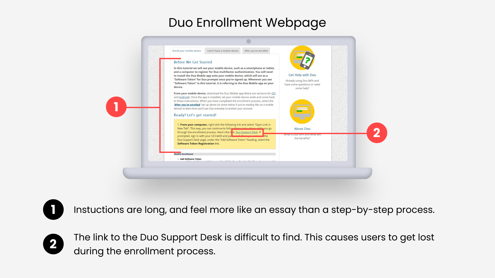
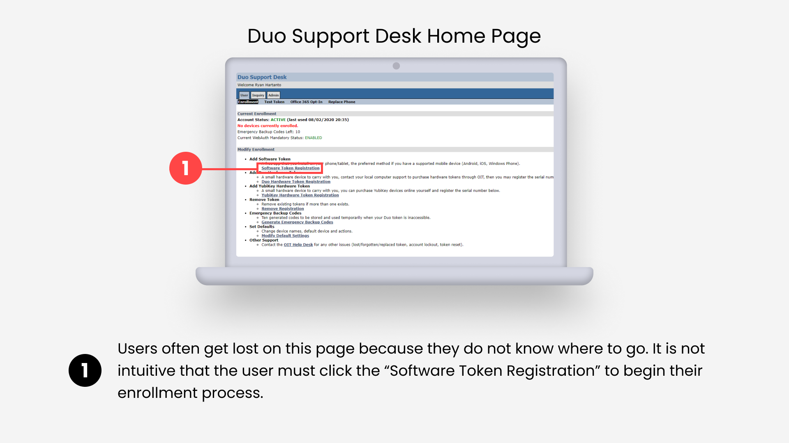
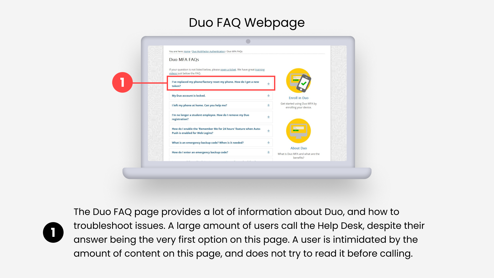
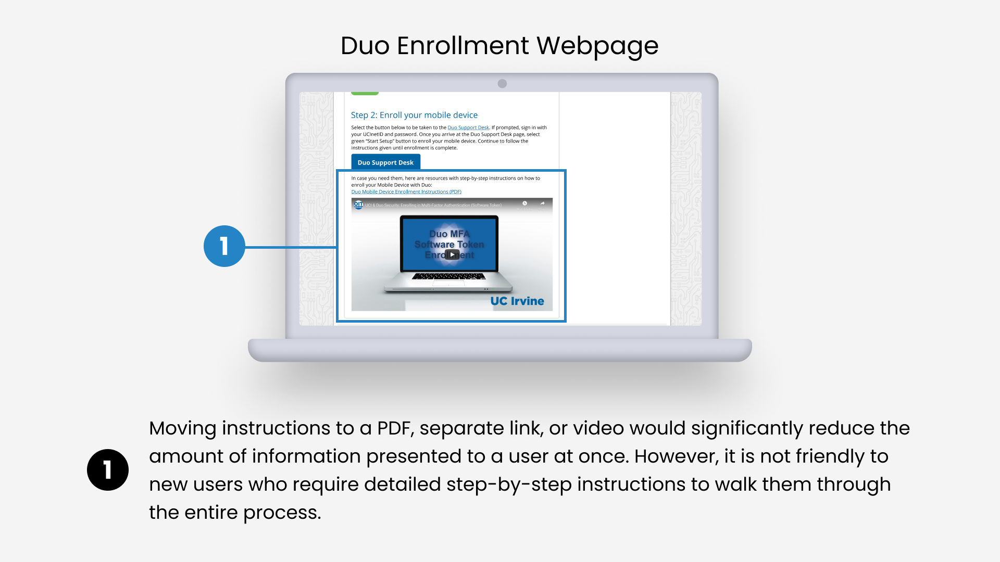
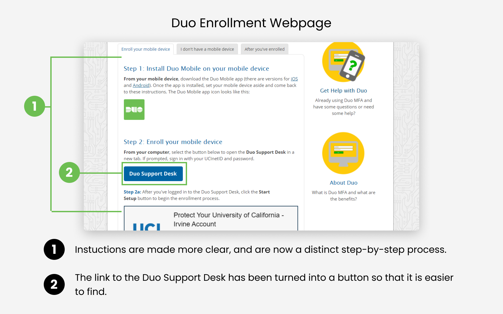
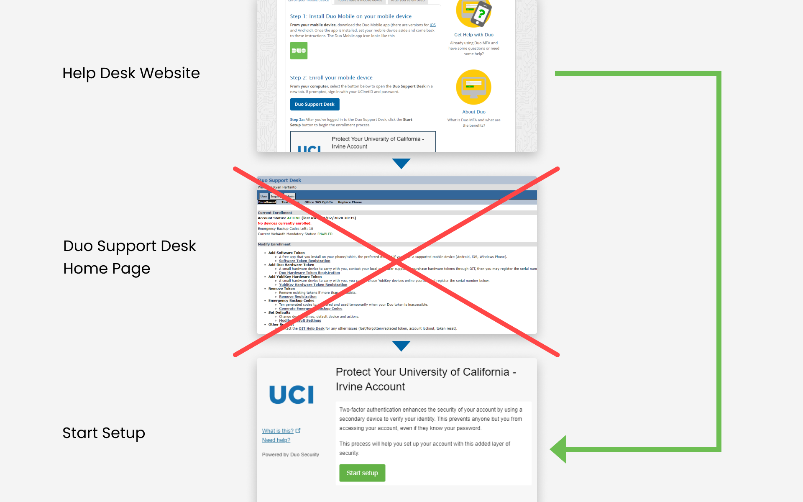
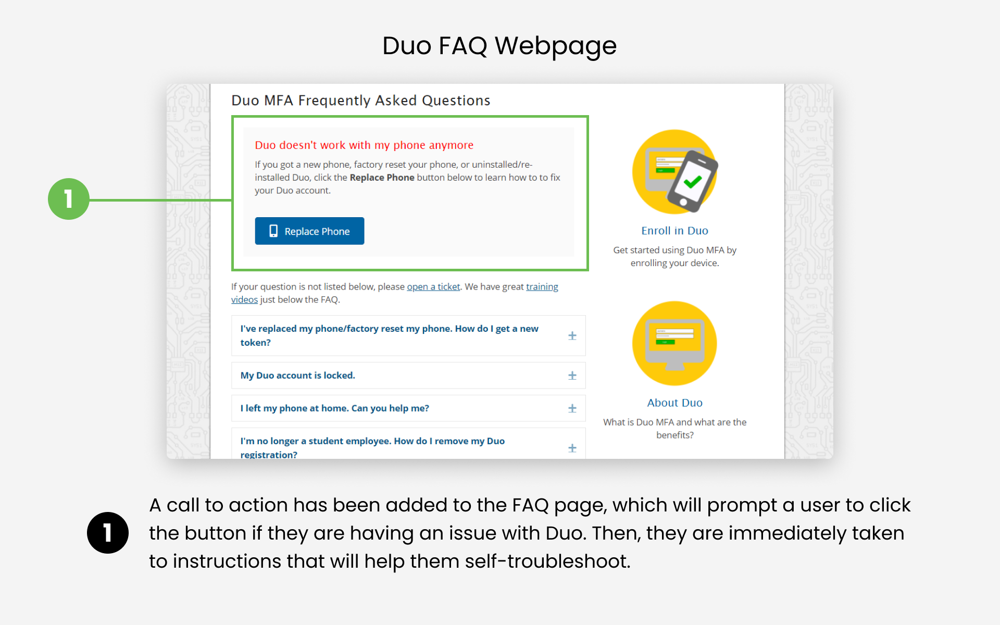

Duo Support Website Redesign
Improving an enrollment process for new users

Improving an enrollment process for new users
Role: Sole UX Researcher and UX Designer
Duration: August 2020 - December 2020
Deliverables:
UC Irvine Office of Information Technology Duo Enrollment Webpage
UC Irvine Office of Information Technology Duo FAQ Webpage
At the UC Irvine Office of Information Technology (OIT), the Help Desk receives many calls and emails
asking for help with enrolling in Duo multi-factor authentication. The sheer volume of people who
need support with Duo is overwhelming. Even worse, around only half of UCI affiliates
are required to use Duo. Eventually, when the other half are required to use Duo as well, the impact on the Help Desk could be devastating.
I took the initiative to do something about this. After performing research and making a case for UX to stakeholders,
I was approved to work on a project to improve the Help Desk’s Duo support websites. Ultimately, my decisions were
implemented on UCI's official Help Desk website.
Duo is a multi-factor authentication service that adds a second layer of protection to UCI services.
What this means is that any time a user logs into a UCI service with their username/password,
they also have to verify their identity with Duo on a mobile device or hardware token.

At the UCI Office of Information Technology (OIT), the Help Desk receives many calls and emails for I.T support.
Every time a user contacts the Help Desk for assistance, something called an incident is created. An incident can
be created to troubleshoot emails, school accounts, applications, and more. Out of all the incidents the Help Desk receives,
a significant amount of them are related to Duo.
During this time, setting up Duo was mandatory for only UCI employees, excluding students.
But in the future, OIT plans to make Duo a requirement for UCI students as well. I compiled data, performed research, and estimated
what the impact of what adding more Duo users would be (Research).

The Help Desk already receives a large amount of Duo-related incidents, and introducing 29,000 new users will only worsen the impact on the Help Desk.
The significant quantity of Duo-related incidents will give the Help Desk less time to focus on other incidents, force the Help Desk to hire
more employees to manage the upsurge of Duo-related incidents, and potentially reduce the quality of Help Desk services - which would impact
other departments at UCI that receive support from the Help Desk.
If users are given more confidence that they can enroll in Duo and troubleshoot Duo-related issues independently,
they will not need to contact the Help Desk for assistance.
Improving the user experience of the Duo enrollment process will mitigate the impact that Duo has on the Help Desk.
This can be done by making changes to existing OIT Help Desk Duo support websites.
This would help accomplish the following objectives:
A user flow helps clarify steps in the enrollment process and identify areas where users encounter an issue.

View enhanced user flow image
Issues that users have with Duo and the enrollment process have been discovered through
experiencing calls and tickets to the Help Desk. I also reached out to students and performed
usability testing on existing Help Desk websites to discover pain points. Referencing the user
flow helped me pinpoint areas of the user experience where people encountered issues.
Enroll in Duo Webpage - Enrollment Instructions:
The Help Desk should not expect every user to read paragraphs of information before enrolling in Duo.
There is too much information presented at once on the Duo Enrollment instructional website,
and they are presented in a way that makes it difficult to discern individual steps. It feels
more like an essay rather than step-by-step instructions. A user is likely to have a negative
response to such a large amount of instructions. Their first impression of Duo will be that it
is inconvenient and a hassle.
Enroll in Duo Webpage - Where to enroll:
To enroll in Duo, a user must access the Duo Support Desk. However, finding
the Duo Support Desk is not obvious enough. On the Duo Enrollment website, the link to the Duo
Support Desk is currently embedded within other instructions and text, which makes it easy to miss.
If people get lost during the enrollment process, they contact the Help Desk.

The Duo Support Desk Home Page:
It goes without saying that this page looks very outdated. This places a poor image on OIT as a whole,
especially because every UCI student and faculty will one day see this page when they have to enroll in Duo. Another issue is how information
is presented on this page. Many users have no idea what to do once on the Duo Support Desk home page, and need
to go back to the instructions to figure out that they need to click “Software Token Registration”.

Troubleshooting:
One of the most common issues that users call the Help Desk about is that they have a new phone,
and that Duo does not work on it. Although the process of replacing their own phone with Duo is simple,
they still feel the need to call the Help Desk. It is too difficult for the user to recognize what their
issue may be and how they can solve it themselves.

I presented my research and project plan to stakeholders at OIT.
After emphasizing the impact Duo has on the Help Desk, and demonstrating how my designs can mitigate that impact,
I received approval to work on redesigning their website.
As I worked on this project, I communicated my progress with the stakeholders, showed my designs to students,
and iterated based on feedback. Some initial designs were intended to make the enrollment page less intimidating by
moving the instructions to a PDF, separate page, or video. However, user testing and stakeholder feedback helped me
realize that step-by-step instructions must be instantly accessible, despite being long. Visibility is prioritized so
that in the event that new users need help with every single step of the enrollment process, the instructions are easy to find.

After presenting my designs and getting approval from stakeholders from OIT, I had the opportunity to
implement my designs directly on their website using WordPress. Now, the current
Duo Help Desk webpages are live and accessible to anyone:
Enroll in Duo Webpage - Enrollment Instructions:
The instructions have been restructured so that users are able to easily read each step.
There is now a distinct step-by-step process, instead of just a wall of paragraphs.
Duo Enrollment Webpage - Added visibility to the Duo Support Desk:
The link to the Duo Support Desk has been turned into a button. It is now much more visible and users no longer have trouble finding it.

Improving the user flow:
Instead of directing the user to the Duo Support Desk Home page, they are instead redirected straight to the enrollment process.
This prevents a user from getting lost on the home page, and skips an unnecessary step in the process.

Adding more visibility to self-troubleshooting:
A call to action has been added to the Duo FAQ page, to encourage users to click on the button if they experience an issue.
This makes troubleshooting instructions much easier to find.

Impact:
The improvements I have implemented will be seen by tens of thousands of UCI students
and employees who need to enroll in Duo. I made sure that my changes
would make the enrollment process more accessible and intuitive for new users.
Working with constraints:
Unfortunately, many of the changes I proposed to OIT were not implemented.
Some of the things that I wanted to change were outside of the scope of the Help Desk.
In addition, some websites that I wanted to improve were run on legacy software,
which meant that OIT was not willing to make tradeoffs
to improve them. As a result, I had to prioritize making improvements to the sites
which were within the project’s scope.
Taking the initiative:
My official job title at the Help Desk is “Help Desk Consultant”.
My responsibilities are to answer calls and emails for I.T support.
Nowhere in the job description does it say to perform UX case studies,
propose projects, and make changes to their support websites.
I am very proud that I took the initiative to spearhead this project, and am extremely
thankful to my supervisors who were very supportive and approved of the work I did.